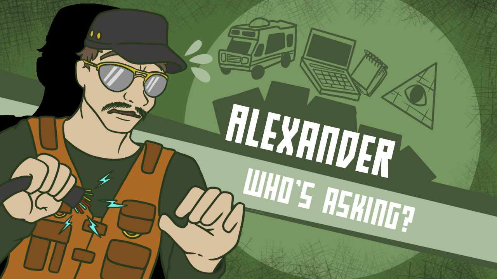
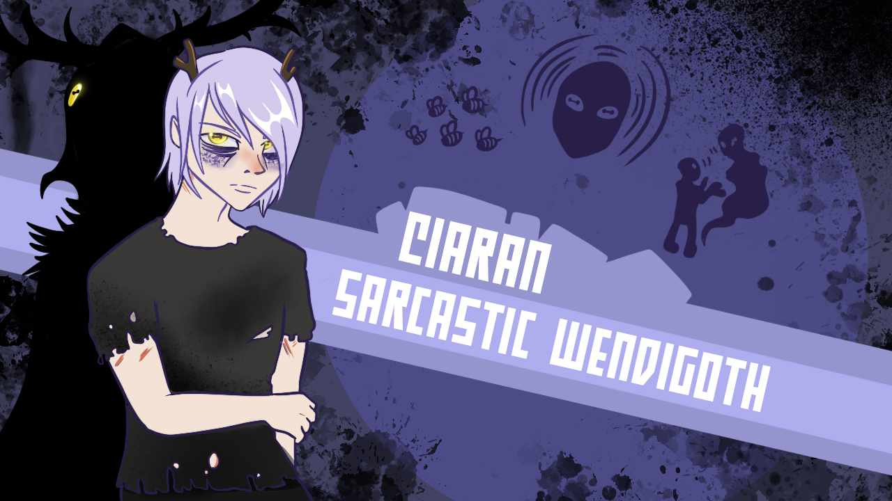
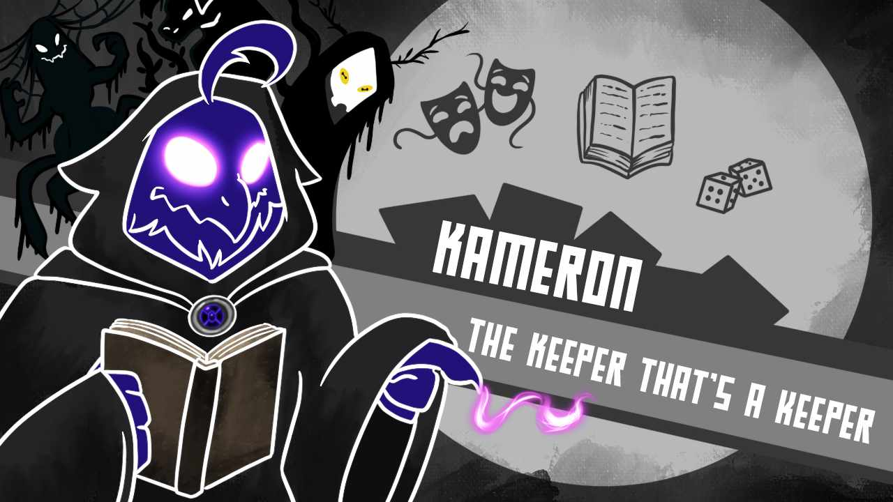
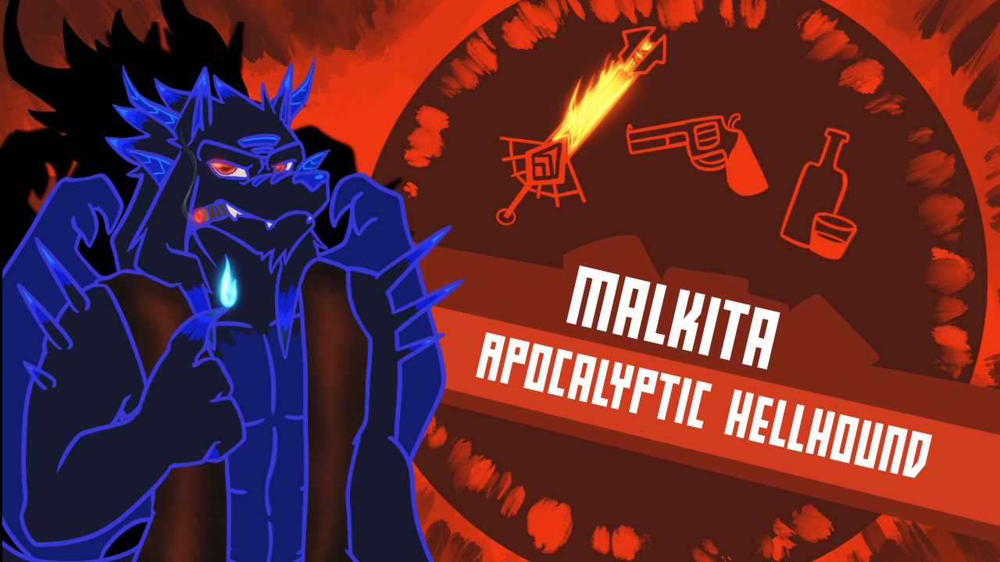
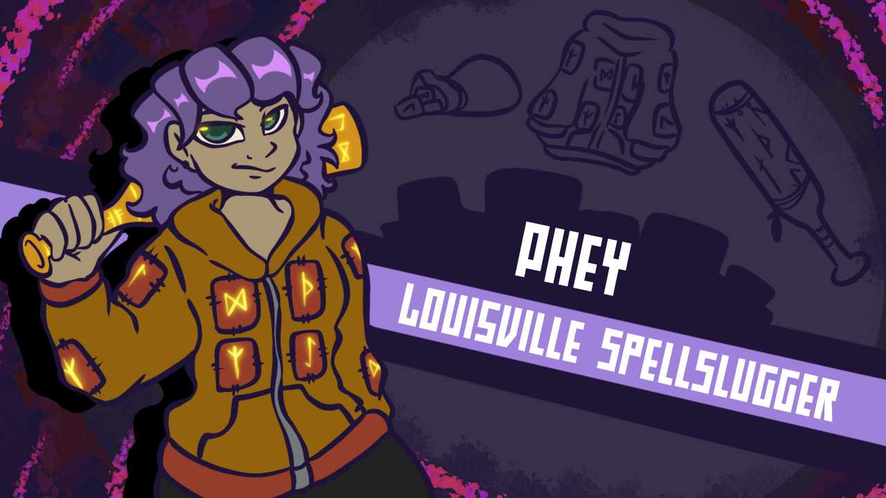
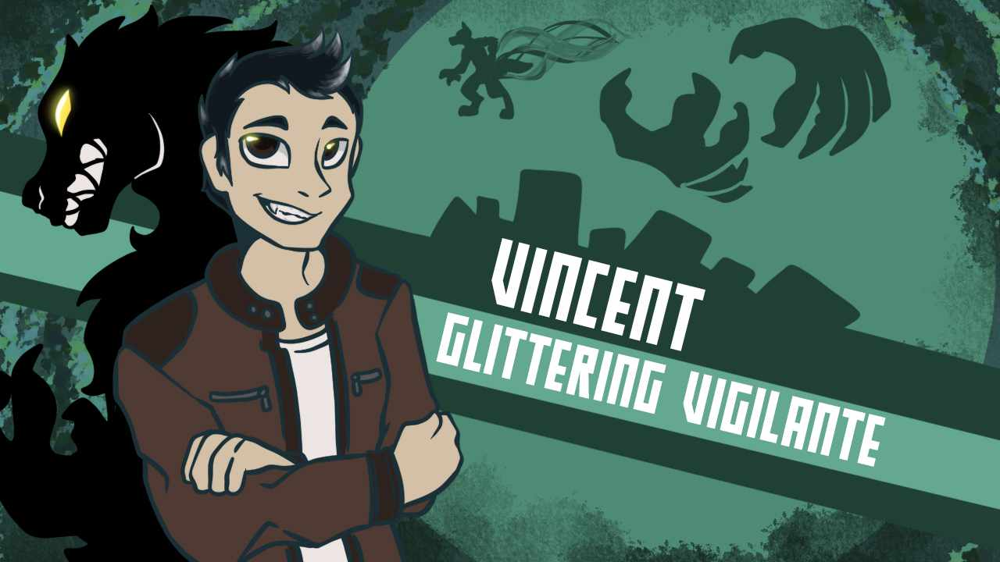

HARK! It is modern day and the ancient city of St. Augustine stirs with monsters! Ancient beings who feast and prey upon the souls and flesh of humans. But fear not, our first line of defense comes in the form of... a pair of bartenders, werewolf strippers, consipracy theorists, and wendigoths?
Babylon is a livestreamed tabletop roleplaying game using the Monster of the Week game published by Evil Hat Productions. The game focuses on the 'Babylon Crew', a group of incompetent monster hunters trying to save the world and keep the Babylon Bar up and running.
Game Master: @CasualKameron
Alexander & Ramiel: @ApolloBun
Ciaran & Pavo Real: @Laughing_otter
Phey: @Miffix
Vincent: @EpicMage0102
The Players
1

Alexander Zapruder is the grandson of yes, THAT Zapruder. At 41, he's the senior member of the Babylon crew. His obsession with conspiracies (these aren't theories, these are facts) started with before his conception, with his Grandfather's proof that the assassination of JFK was, in fact, a hit by the CIA. Since then, his family has been devoted to exposing, the CIA for what it really is: a domestic terror organization run by the Illuminati. What does this have to do with monsters? He has to make sure the Illuminati can't weaponize them.
2

Ciaran is a 27 year old loner of sorts. He mostly sarcastic and only has a small handful of people he can trust, and a forest spirit named Fir, He gained his supernatural powers from fir at a young age but ultimately his powers did come at a cost, his family. After they were killed he was passed around from foster home to foster home. He always had a fascination with insects and the macabre and found some comfort drab and dreary. His supernatural powers do sometimes get the best of him and he tends to go overboard with control of others.
3

The Keeper of Elderitch Truths, and Monstrous Improv. Kameron is the GM of the game and crafter of our story.
4

Malkita – Born originally in 1672, was recently brought back to earth in his gigantic hellhound body with his demonic blade Ardere. He had no idea why he’s back but soon found out he was destined to bring forth the apocalypse. Romantically entangled with Phey, the behemoth of a demon now owns and lives alongside her in the Babylon Bar near the outskirts of St. Augustine.
5

Pheres Ruette (Phey for short) is a 26-year-old urban mage. Instead of crafting a wand, she enchanted a baseball bat with runes and has been slowly accumulating an arsenal of potables and magical supplies. She runs the Babylon Bar, a monster-spirit-friendly pub, with Malkita, who she’s been with for the past 4 years.
6

Vincent is a 20 year old, korean, white werewolf. In his day life, he works as a college student, studying general education trying to find out what he wants to do with his life. Contrasting with his night life of being Saint Augustine's werewolf vigilante "White Fang" as the townspeople have begun to call him. He also has a night job as the leader of the Full Moon Flashers stripper group, hosted by the club Sinister.
❮
❯
Episode List